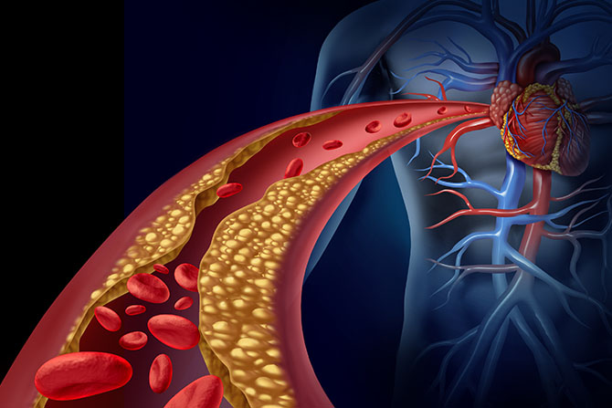
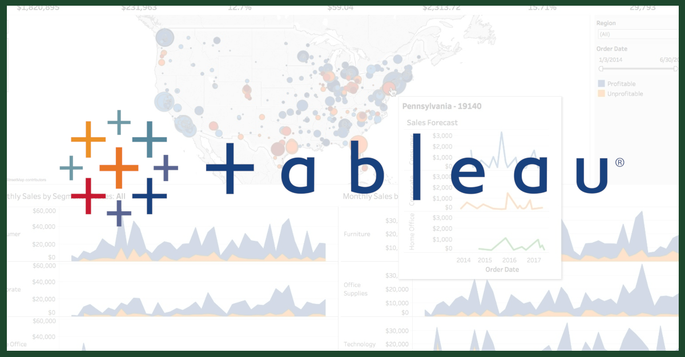

Python | Pandas | Scikit-learn | Machine Learning
Developed a multiclass machine learning model to classify individuals into
Low Risk, At Risk, and
Heart Disease categories using over
253,000 public health records from the CDC Behavioral Risk
Factor Surveillance System (BRFSS). The project included data preprocessing,
feature engineering, model comparison, and performance evaluation using
multiple classification algorithms. KNN achieved the highest overall
accuracy (85.98%), while Logistic Regression produced the
best balanced performance across all classes based on Macro F1 Score.
The analysis identified high blood pressure, BMI, diabetes,
cholesterol, smoking, age, and general health as the strongest
predictors of heart disease risk.
Key Highlights
- Built a multiclass machine learning classification model using healthcare data.
- Compared Baseline, Logistic Regression, K-Nearest Neighbors (KNN), and Support Vector Machine (SVM) models.
- Performed feature engineering while preventing data leakage.
- Evaluated model performance using Accuracy, Precision, Recall, Macro F1 Score, and Confusion Matrices.
- Identified key heart disease risk indicators including high blood pressure, BMI, diabetes, cholesterol, smoking, age, and general health.
- Analyzed a public healthcare dataset containing 253,680 patient records.

💻 Click the title or image to view the GitHub repository.
📄 Click Live Report to view the complete project report.
Live Report

Developed an end-to-end natural language processing pipeline to classify customer sentiment from restaurant reviews. Compared dictionary-based sentiment analysis with supervised machine learning models including LASSO Logistic Regression, Random Forest, and XGBoost. Evaluated model performance using accuracy, precision, recall, and F1 score to identify the most effective approach for sentiment classification.
💻 Click the title or image to view the GitHub repository.
📄 Click Live Report to view the complete project report.

This Tableau project analyzes customer reviews of British Airways, focusing on key service aspects such as food, entertainment, cabin staff service, seat comfort, and value for money. To provide a clear understanding of the airline’s performance. Additionally, an interactive dashboard was developed to enhance data exploration and analysis.
In this Excel project, I cleaned the dataset to ensure accuracy and consistency. I calculated descriptive statistics, including the maximum, minimum, and mean, to gain a clear understanding of the data. I analyzed revenue trends, identified the primary target audience, and evaluated payment method preferences. Additionally, I determined which country generated the highest revenue. These insights provided a comprehensive overview to inform strategic decisions.
Degree is a well-known deodorant brand recognized for its innovative motion-sensing technology and reliable odor and sweat protection. While the brand enjoys high awareness (89%), it struggles to convert this into consistent customer engagement, with only 34% usage and 26% loyalty. Degree faces stiff competition from brands like Old Spice, Dove, and Native, which excel in areas such as natural ingredients, sustainability, and unique scent offerings. To address these challenges, Degree could introduce a dedicated aluminum-free and natural product line, emphasize sustainability with eco-friendly packaging, and revitalize its marketing to appeal to younger consumers. By aligning with current trends and improving customer retention, Degree can strengthen its competitive position and drive long-term growth.